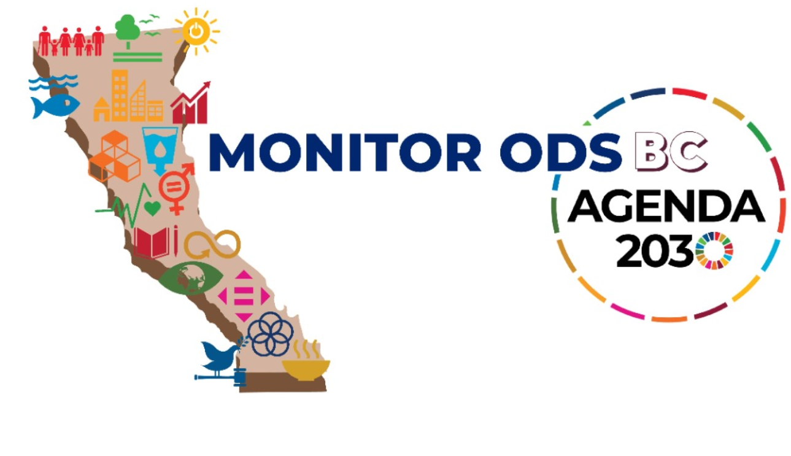
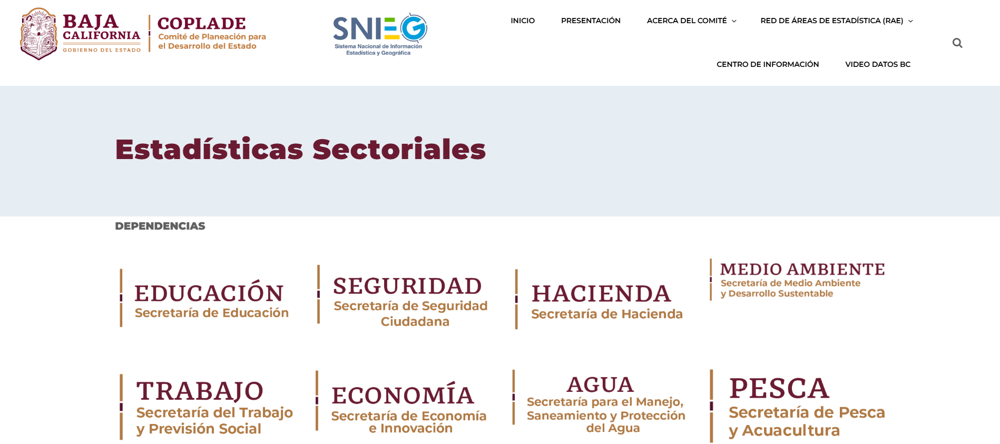
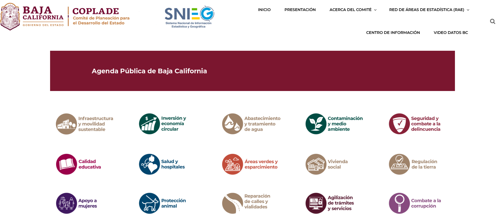
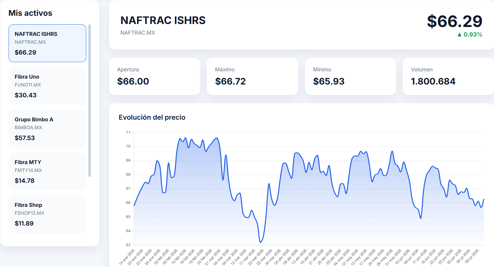
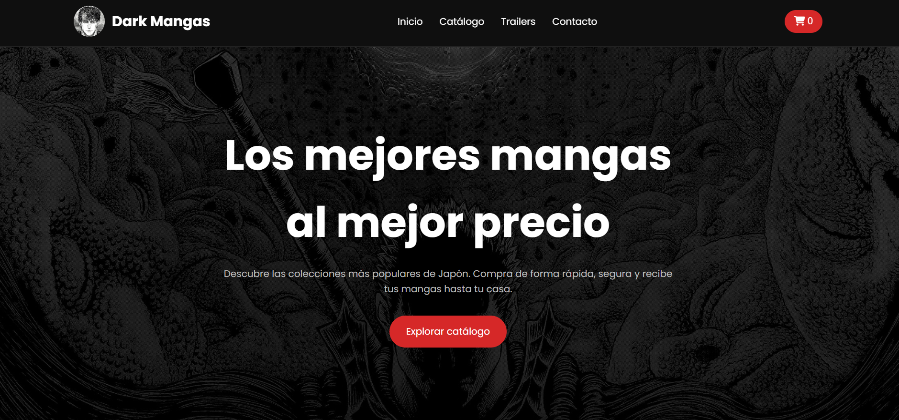

Master’s in Information and Communication Technology Management, Bachelor’s Degree in Economics, and Big Data Technician. Specialized in data analysis, business intelligence, web development, and the design of platforms for statistical and economic information.
My experience combines economics, statistical analysis, and software development to transform large volumes of data into useful tools for decision-making. Throughout my career, I have developed web platforms, dashboards, monitoring systems, ETL processes, and economic analysis products using technologies such as Excel, Python, Power BI, SQL, JavaScript and ArcGIS.
Indicators Developed
Statistical Analysis
Databases Analyzed
Platforms and Dashboards
These are some of the web applications I have developed throughout my professional career at COPLADE Baja California, as well as through personal projects and research work.

State-level platform for monitoring more than 100 Sustainable Development Goal (SDG) indicators using ArcGIS Online.

Datos BC section for accessing statistical information organized by economic and social sectors.

Platform for accessing public programs, indicators, and documents developed for Datos BC.

Platform developed to monitor stock market investments, using ETL processes with Python and dynamic data visualization through JavaScript.

Project developed as part of the Responsive Web Design certification. It consists of an online manga store built using only HTML and CSS.
Throughout my academic and professional career, I have conducted economic research, prepared technical reports, and performed statistical analyses using data from INEGI, CONEVAL, IMSS, DATATUR, Banco de México, and other official sources.
Technical reports, fact sheets, and analyses developed as Coordinator of the Population and Statistics Department.
Projects developed during my Bachelor’s Degree in Economics, focused on econometrics, macroeconomics, and applied research.
You can view my resume, explore my projects, or get in touch with me through any of the following channels.